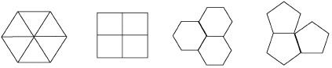

A Word about Tessellations
| Perhaps the simplest tessellations, or tlings, are those of the plane by regular polygons. |
| Here the entire plane is covered by polygons meeting only along edges. |
| If all the tiles are regular and similar, only equilateral triangles, squares, and hexagons can be used, because each of their interior angles evenly divides 360. |
| Any point in the plane can be surrounded by six equilateral triangles, four squares, or three hexagons. |
| No other regular polygons have interior angles which divide 360 and hence they cannot form a non-overlapping covering of the plane leaving no gaps. |
|  |
| Tiling the plane with modified versions of these three polygons and the symmetries produced by these tilings is an interesting study in itself. |
| M.C. Escher made many artistic tilings based on these polygons. |
| Here we illustrate tilings confining ourselves to the square and some of the ways it can be changed. |
Return to Background.